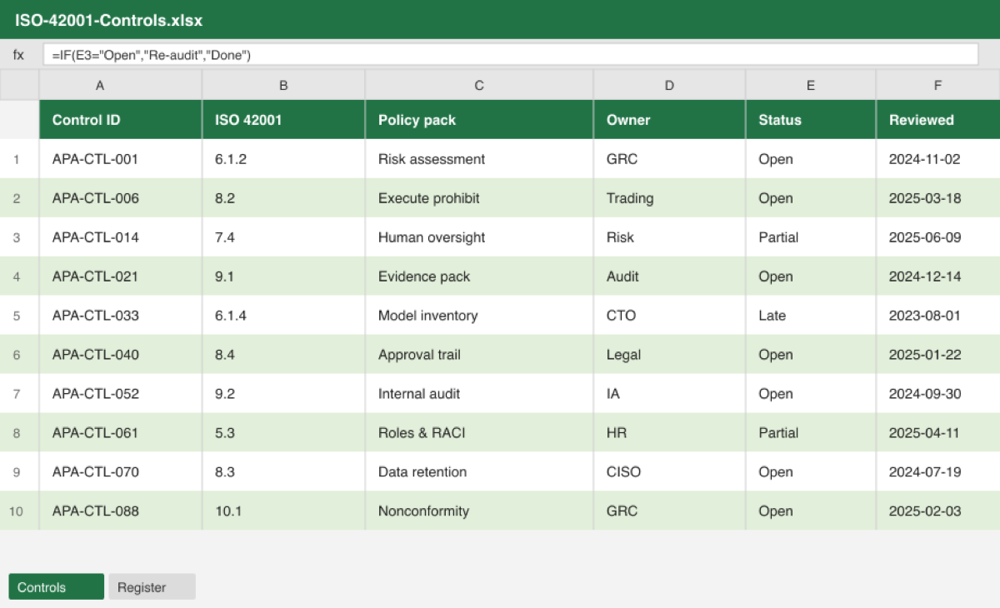

Good governance used to be a lot harder
Then

Adhering to standards
ISO 42001 tracked in a spreadsheet, rebuilt by hand for every audit.
Then
Policy files
Massive packs that only live in shared drives.
Then

Mountains of evidence
Folders of scanned documents and screenshots packaged for the auditor.
Now
Standards as code
Mapped once. Checked continuously, by the same AI tools.
Now
Policies in version control
Reviewed, released and promoted like any other artefact.
Now
Evidence as a by-product
The trail writes itself. The operating model is cheaper than the alternative.